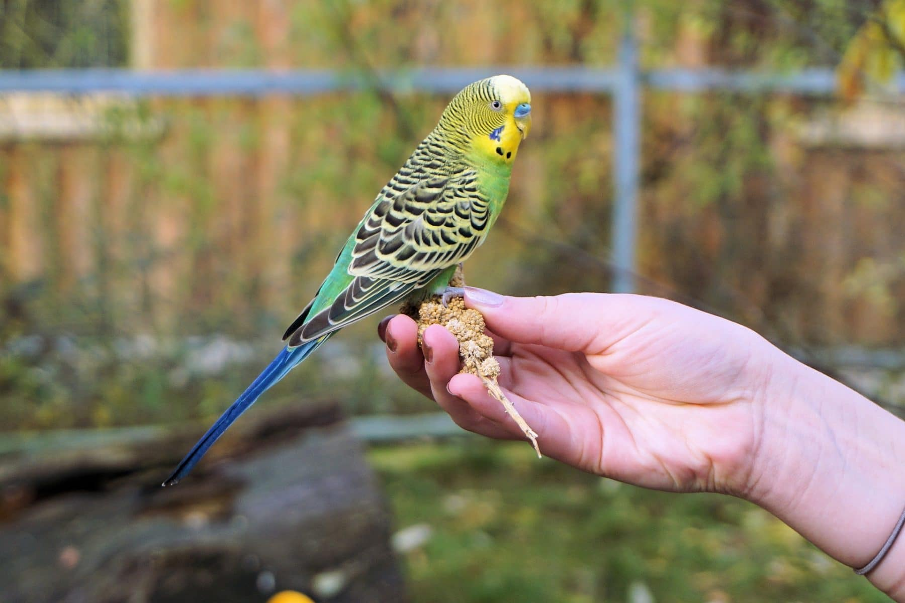

À propos des perruches
Les perruches sont d'excellents animaux de compagnie. Elles sont intelligentes et sociables!
Mieux connaitre les perruches
Ce que les perruches aiment
- Le millet
- Jouer
- Chanter et danser
Les différents types de perruches ondulées
Il existe plusieurs types de perruches domestiques dû à des croisements pour obtenir plusieurs couleurs!
- Opalines
- Perlées
- Masque jaune et masque doré australien
- Anglaises